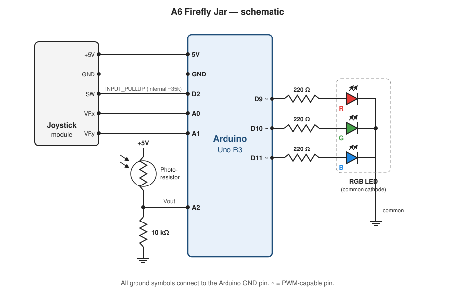
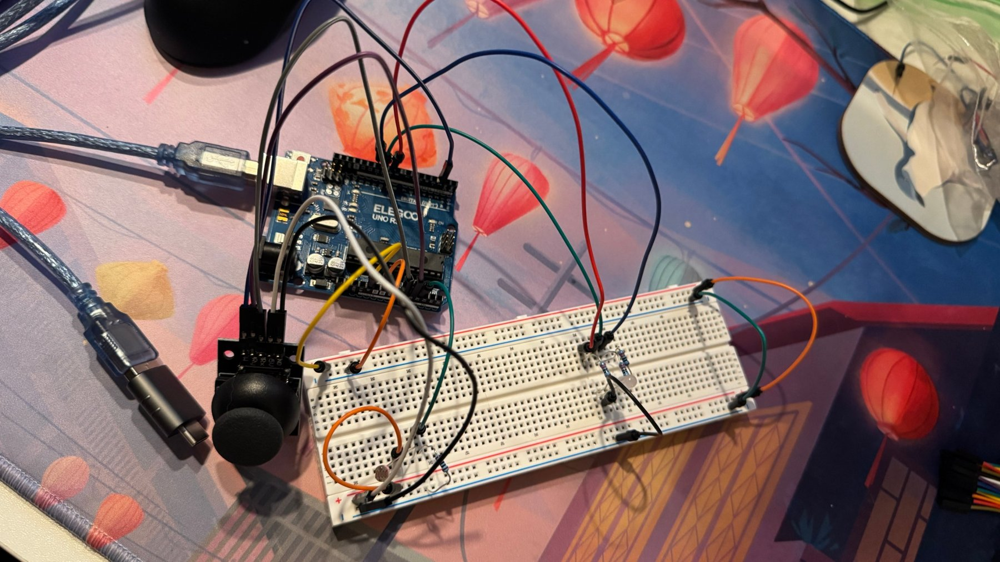
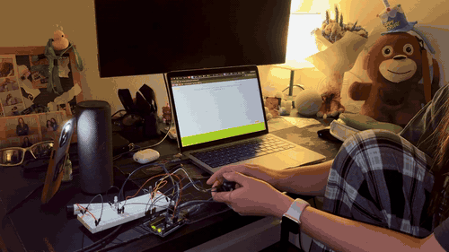

HCDE 439 Physical Computing · Arduino ↔ web page over Web Serial
This is the web sequel to my A2 Firefly Jar. Firefly Jar is now a small night-time game that lives half on screen and half on my desk. In daylight the sky is empty. When I cover the photoresistor with my hand, the sky on the page fades to night, stars come out and glowing fireflies start drifting in. I steer a glass jar around the screen with the joystick to catch them. Each firefly I catch changes the real RGB LED on my breadboard: the LED glows in the mixed color of every firefly in the jar, gets brighter the fuller the jar is, and gently pulses like a firefly. Clicking the mouse "taps the glass," which makes the real LED flash white and the fireflies on screen startle. Pressing the joystick button (or SPACE) opens the jar: the fireflies fly away on screen and the LED goes dark.
Use Chrome or Edge (Web Serial only works in Chromium browsers), plug in the Arduino running the firmware below, then click Connect to Arduino.
| Direction | What you do | What happens |
|---|---|---|
| Arduino → Web | Cover / uncover the photoresistor | Sky turns night / day; fireflies appear or fly off |
| Arduino → Web | Push the joystick (X and Y) | Jar moves around the screen |
| Arduino → Web | Press the joystick button | Jar opens, fireflies released |
| Web → Arduino | Catch fireflies | Real LED glows in their mixed color, brighter as the jar fills |
| Web → Arduino | Click the mouse | Real LED flashes white for 150 ms |
| Web → Arduino | Press SPACE | Jar opens, real LED turns off |
That's four inputs from two input devices (joystick X, joystick Y, joystick button, photoresistor) and one output device (the RGB LED).

INPUT_PULLUP resistor, which holds D2 at 5 V until the button pulls it to 0 V.analogWrite() mix any color. Each color has its own 220 Ω resistor so each LED's current is limited separately.Each color is its own LED, so I use R = (Vsupply − Vf) / I for each. The red die in an RGB LED drops about 2.0 V; the green and blue dies drop about 3.0 V. Red has the lowest Vf, so it needs the biggest resistor: (5 − 2.0) V / 0.020 A = 150 Ω minimum. I used 220 Ω on all three to stay safely under 20 mA:
| Color | Vf | I = (5 − Vf) / 220 Ω |
|---|---|---|
| Red (D9) | ~2.0 V | 3.0 / 220 = 13.6 mA |
| Green (D10) | ~3.0 V | 2.0 / 220 = 9.1 mA |
| Blue (D11) | ~3.0 V | 2.0 / 220 = 9.1 mA |
Even at full white (the tap flash) the LED draws about 32 mA total, well under the Uno's limits. These are the maximums: analogWrite(pin, value) turns the pin on for value/255 of the time (PWM), so a value of 128 averages about half that current and looks about half as bright.
The photoresistor (Rphoto) is on top and the 10 kΩ resistor is on the bottom, so the voltage divider formula is Vout = 5 V × 10 kΩ / (Rphoto + 10 kΩ). analogRead() turns 0–5 V into 0–1023, so the reading = 1023 × Vout / 5 V = 1023 × 10 kΩ / (Rphoto + 10 kΩ). Its resistance drops in light, so brighter = higher reading:
| Condition | Rphoto (approx.) | Vout | analogRead |
|---|---|---|---|
| Bright desk lamp | 1 kΩ | 4.55 V | ~930 |
| Normal room light | 10 kΩ | 2.50 V | ~512 |
| Hand cupped over it | 50 kΩ | 0.83 V | ~171 |
| Fully dark | 200 kΩ | 0.24 V | ~49 |
From these numbers I set DAY_READING = 500 and NIGHT_READING = 200 in the sketch. The page maps the reading from 500→200 onto a darkness value from 0→1 (and clamps anything outside that range), so room light is full day and a covered sensor is full night. Darkness controls the sky color and how many fireflies are out (darkness × 14).
My measurements: in my room the sensor read about 560 uncovered and about 158 with my hand cupped over it. Working the divider formula backwards, Rphoto = 10 kΩ × (1023 / reading − 1), so 560 means about 8.3 kΩ and 158 means about 55 kΩ, close to the estimates in the table. That puts DAY_READING = 500 and NIGHT_READING = 200 just inside my measured range: uncovered (560) is full day and covered (158) reaches full night, with 40–60 counts of margin in case the room gets a little dimmer or my hand doesn't block all the light.
Each joystick axis is a 10 kΩ potentiometer from 5 V to ground, so its wiper gives 0–5 V and reads 0–1023. At rest the wiper is in the middle: 2.5 V → 1023 × 2.5 / 5 ≈ 512. The sketch subtracts 512 to get how far the stick is pushed (about −512 to +511). Real joysticks don't rest at exactly 512, so anything within ±60 of center (about 12% of the travel) counts as zero to stop the jar from drifting. Then map(dx, -512, 512, -9, 9) turns the push into a speed of up to 9 pixels per frame; at ~60 frames per second that's about 540 pixels per second at full tilt. This moves the jar relative to where it is, rather than jumping it to an absolute position.
With INPUT_PULLUP, D2 reads HIGH (1) when the button is up and LOW (0) when pressed, which is backwards from what you'd expect, so the firmware sends 1 when it reads LOW. The page only releases the fireflies on the frame the button changes from 0 to 1, so holding it down doesn't keep re-triggering.
Both directions use plain text at 9600 baud. Each character takes 10 bits (start + 8 data + stop), or about 1.04 ms.
x,y,light,button, e.g. 512,498,431,0, every 50 ms (20 times a second). The longest possible line is 1023,1023,1023,1 plus \r\n = 18 characters ≈ 18.8 ms, which fits comfortably in the 50 ms gap.r,g,b, e.g. 140,107,51, only when the color changes (on a catch, release or tap), not every frame. The longest message, 255,255,255\n, is 12 characters ≈ 12.5 ms. The Arduino reads the three numbers with Serial.parseInt() and only uses them if the message ends with a newline, so half-received messages are ignored.The LED color is the average of the caught fireflies' colors, scaled by how full the jar is: brightness = map(count, 1, 8, 0.3, 1). For example, one amber (255,190,40) and one lime (170,255,60) firefly average to (212.5,222.5,50); with 2 of 8 fireflies the level is 0.3 + 0.7 × 1/7 = 0.4, so the page sends 85,89,20. On the Arduino, that color is multiplied by 0.775 + 0.225 × sin(millis/300), which swings between 0.55 and 1.0 about every 2π × 300 ms ≈ 1.9 s, so the LED breathes like a firefly without the page needing to send anything.


File: a6/a6.ino. The loop never uses delay(): it checks for an incoming color, updates the LED's pulsing glow, and uses millis() to send sensor readings every 50 ms, so reading, glowing and sending all happen smoothly together.
// A6 "Firefly Jar" firmware
// Sends the joystick, photoresistor and joystick button to the web page,
// and lights the RGB LED in whatever color the web page tells it to.
// Analog pin wired to the joystick's left/right wiper (VRx)
const int JOY_X_PIN = A0;
// Analog pin wired to the joystick's up/down wiper (VRy)
const int JOY_Y_PIN = A1;
// Analog pin wired to the middle of the photoresistor / 10k voltage divider
const int LIGHT_PIN = A2;
// Digital pin wired to the joystick's push button (SW)
const int BUTTON_PIN = 2;
// PWM pin driving the RGB LED's red leg through a 220 ohm resistor
const int RED_PIN = 9;
// PWM pin driving the RGB LED's green leg through a 220 ohm resistor
const int GREEN_PIN = 10;
// PWM pin driving the RGB LED's blue leg through a 220 ohm resistor
const int BLUE_PIN = 11;
// How often (in milliseconds) to send sensor readings to the web page: 20 times a second
const unsigned long SEND_INTERVAL = 50;
// The millis() time when readings were last sent
unsigned long lastSend = 0;
// Red brightness (0-255) most recently requested by the web page
int jarRed = 0;
// Green brightness (0-255) most recently requested by the web page
int jarGreen = 0;
// Blue brightness (0-255) most recently requested by the web page
int jarBlue = 0;
// setup() runs once when the board powers on or resets
void setup() {
// Open serial at 9600 baud; the web page must use the same speed
Serial.begin(9600);
// Only wait up to 20 ms for the rest of a number so loop() never stalls for long
Serial.setTimeout(20);
// Use the Arduino's built-in pull-up resistor so the button reads HIGH until pressed
pinMode(BUTTON_PIN, INPUT_PULLUP);
// Make the red LED pin an output
pinMode(RED_PIN, OUTPUT);
// Make the green LED pin an output
pinMode(GREEN_PIN, OUTPUT);
// Make the blue LED pin an output
pinMode(BLUE_PIN, OUTPUT);
}
// loop() runs over and over forever
void loop() {
// ---- Web -> Arduino: receive a color as text like "255,200,40\n" ----
// Only try to read if at least one character has arrived from the web page
if (Serial.available() > 0) {
// Read the first number in the message (red)
int r = Serial.parseInt();
// Read the second number in the message (green)
int g = Serial.parseInt();
// Read the third number in the message (blue)
int b = Serial.parseInt();
// Only accept the color if the message ends with a newline, i.e. it arrived complete
if (Serial.read() == '\n') {
// Store red, clamped to the 0-255 range analogWrite accepts
jarRed = constrain(r, 0, 255);
// Store green, clamped to 0-255
jarGreen = constrain(g, 0, 255);
// Store blue, clamped to 0-255
jarBlue = constrain(b, 0, 255);
}
}
// ---- Make the LED glow like a firefly ----
// Read the current time in milliseconds
unsigned long now = millis();
// Brightness multiplier that gently pulses between 0.55 and 1.0 about every 1.9 s (2*pi*300 ms)
float glow = 0.775 + 0.225 * sin(now / 300.0);
// Set the red brightness: requested color times the pulse
analogWrite(RED_PIN, (int)(jarRed * glow));
// Set the green brightness: requested color times the pulse
analogWrite(GREEN_PIN, (int)(jarGreen * glow));
// Set the blue brightness: requested color times the pulse
analogWrite(BLUE_PIN, (int)(jarBlue * glow));
// ---- Arduino -> Web: send "x,y,light,button\n" every 50 ms ----
// Only send once at least SEND_INTERVAL ms have passed since the last send
if (now - lastSend >= SEND_INTERVAL) {
// Remember when this send happened
lastSend = now;
// Send the joystick's left/right reading (0-1023, about 512 at rest)
Serial.print(analogRead(JOY_X_PIN));
// Comma separates the values so the web page can split them apart
Serial.print(",");
// Send the joystick's up/down reading (0-1023, about 512 at rest)
Serial.print(analogRead(JOY_Y_PIN));
// Comma separator
Serial.print(",");
// Send the light reading (higher = brighter room, lower = darker)
Serial.print(analogRead(LIGHT_PIN));
// Comma separator
Serial.print(",");
// Send 1 if the button is pressed (pin pulled LOW) or 0 if not, then end the line
Serial.println(digitalRead(BUTTON_PIN) == LOW ? 1 : 0);
}
}
Files: a6/index.html and a6-web/sketch.js. setup() runs once to create the canvas, serial port and stars; draw() runs about 60 times a second to read the Arduino, update the game and send the LED color. The serial helper functions at the bottom (setupSerial, checkPort, onConnectButtonClicked) follow the structure of the class p5-arduino examples; the game, interaction design and messaging are my own.
<!DOCTYPE html>
<!-- Tell the browser this file is HTML -->
<html lang="en">
<!-- The head holds settings and the scripts the page needs -->
<head>
<!-- Use UTF-8 text encoding -->
<meta charset="utf-8" />
<!-- Make the page fit phone and laptop screens -->
<meta name="viewport" content="width=device-width, initial-scale=1" />
<!-- Title shown in the browser tab -->
<title>A6: Firefly Jar</title>
<!-- Remove the default margin and scrollbars so the canvas fills the window -->
<style>body { margin: 0; overflow: hidden; background: #0a0f28; }</style>
<!-- Load the p5.js drawing library -->
<script src="https://cdn.jsdelivr.net/npm/p5@1.11.1/lib/p5.min.js"></script>
<!-- Load p5.webserial, which wraps the browser's Web Serial API for p5 -->
<script src="https://unpkg.com/@gohai/p5.webserial@^1/libraries/p5.webserial.js"></script>
</head>
<!-- The body is the visible page -->
<body>
<!-- Load my sketch, which has the setup() and draw() functions -->
<script src="sketch.js"></script>
</body>
</html>
// A6 "Firefly Jar": steer a jar with the joystick to catch fireflies.
// Covering the photoresistor turns day into night (fireflies only come out in the dark).
// The real RGB LED glows in the mixed color of the fireflies in the jar.
// ---------- Settings ----------
// Serial speed; must match Serial.begin(9600) in the firmware
const BAUD_RATE = 9600;
// Joystick resting value: the pot's wiper sits at 2.5 V of 5 V, which reads 1023 * 2.5 / 5 = ~512
const JOY_CENTER = 512;
// Readings within this distance of center count as "not moving", so a slightly off-center stick doesn't drift
const JOY_DEADZONE = 60;
// Fastest the jar can move, in pixels per frame, when the stick is pushed all the way
const JAR_MAX_SPEED = 9;
// Light reading at or below this counts as full night (photoresistor covered); tune to your room
const NIGHT_READING = 200;
// Light reading at or above this counts as full day (normal room light); tune to your room
const DAY_READING = 500;
// Most fireflies flying free at full darkness
const MAX_FREE = 14;
// Most fireflies the jar can hold
const MAX_JAR = 8;
// Jar width in pixels
const JAR_W = 110;
// Jar height in pixels
const JAR_H = 140;
// How long (ms) the LED flashes white when you tap the glass with the mouse
const FLASH_MS = 150;
// Firefly colors: lime, amber, sky blue, pink (so the LED visibly mixes colors)
const FIREFLY_COLORS = [[170, 255, 60], [255, 190, 40], [70, 190, 255], [255, 80, 200]];
// ---------- State ----------
// The serial port object from p5.webserial
let port;
// The Connect/Disconnect button
let connectBtn;
// The p5 canvas (used to ignore clicks on the button)
let canvas;
// Latest joystick left/right reading from the Arduino
let joyX = JOY_CENTER;
// Latest joystick up/down reading from the Arduino
let joyY = JOY_CENTER;
// Latest light reading from the Arduino; start at "day"
let lightReading = DAY_READING;
// Whether the joystick button is pressed right now
let buttonDown = false;
// Whether the joystick button was pressed last time we checked (to detect a new press)
let buttonWasDown = false;
// How dark it is: 0 = day, 1 = full night
let darkness = 0;
// Jar's horizontal center position
let jarX;
// Jar's vertical center position
let jarY;
// Fireflies flying free in the sky
let freeFlies = [];
// Fireflies caught in the jar
let jarFlies = [];
// Time (ms) until which the LED should flash white
let flashUntil = 0;
// The last color message sent to the Arduino, so we only send when it changes
let lastSent = "";
// Star positions for the night sky
let stars = [];
// ---------- p5 setup and draw ----------
// setup() runs once when the page loads
function setup() {
// Make a canvas that fills the browser window
canvas = createCanvas(windowWidth, windowHeight);
// Create the serial port and the connect button
setupSerial();
// Start the jar in the middle of the screen, horizontally
jarX = width / 2;
// Start the jar a bit below the vertical middle
jarY = height * 0.6;
// Make 80 stars
for (let i = 0; i < 80; i++) {
// Give each star a random position in the top 70% of the screen and a random twinkle offset
stars.push({ x: random(width), y: random(height * 0.7), phase: random(TWO_PI) });
}
// Center text horizontally and vertically on its position
textAlign(CENTER, CENTER);
}
// draw() runs about 60 times a second
function draw() {
// If the Arduino is connected, read its latest sensor values
if (checkPort()) readArduino();
// Turn the light reading into darkness from 0 (day) to 1 (night)
darkness = constrain(map(lightReading, DAY_READING, NIGHT_READING, 0, 1), 0, 1);
// Move the jar with the joystick
moveJar();
// If the button just went from up to down, let the fireflies go
if (buttonDown && !buttonWasDown) releaseFlies();
// Remember the button state for next frame
buttonWasDown = buttonDown;
// Add or remove free fireflies to match how dark it is
updateFlyCount();
// Move free fireflies and catch any inside the jar
updateFreeFlies();
// Draw the sky, stars and ground
drawScene();
// Draw each free firefly
for (let f of freeFlies) drawFly(f.x, f.y, f.col, f.phase, 1);
// Draw the jar and the fireflies in it
drawJar();
// Draw the instructions and raw sensor readings
drawHud();
// Tell the Arduino what color the LED should be
sendJarColor();
}
// ---------- Arduino -> Web ----------
// Read one line like "512,498,431,0" from the Arduino and store the values
function readArduino() {
// Read everything up to the next newline (empty string if a full line hasn't arrived)
let str = port.readUntil("\n");
// Nothing new arrived this frame, so keep the old values
if (str.length == 0) return;
// Remove the newline/whitespace and split on commas into four pieces
let arr = str.trim().split(",");
// Ignore partial or garbled lines that don't have exactly four values
if (arr.length != 4) return;
// First value: joystick left/right (0-1023)
joyX = Number(arr[0]);
// Second value: joystick up/down (0-1023)
joyY = Number(arr[1]);
// Third value: light level (0-1023)
lightReading = Number(arr[2]);
// Fourth value: 1 means the button is pressed
buttonDown = arr[3] == "1";
}
// Move the jar relative to its current position based on how far the stick is pushed
function moveJar() {
// How far the stick is from center horizontally (about -512 to +511)
let dx = joyX - JOY_CENTER;
// How far the stick is from center vertically
let dy = joyY - JOY_CENTER;
// Inside the dead zone, treat horizontal as zero
if (abs(dx) < JOY_DEADZONE) dx = 0;
// Inside the dead zone, treat vertical as zero
if (abs(dy) < JOY_DEADZONE) dy = 0;
// Turn horizontal stick distance into a speed and move the jar
jarX += map(dx, -512, 512, -JAR_MAX_SPEED, JAR_MAX_SPEED);
// Turn vertical stick distance into a speed and move the jar
jarY += map(dy, -512, 512, -JAR_MAX_SPEED, JAR_MAX_SPEED);
// Keep the jar fully on screen left to right
jarX = constrain(jarX, JAR_W / 2, width - JAR_W / 2);
// Keep the jar fully on screen top to bottom
jarY = constrain(jarY, JAR_H / 2, height - JAR_H / 2);
}
// ---------- Fireflies ----------
// Spawn or remove free fireflies so the count follows the darkness
function updateFlyCount() {
// Target number of free fireflies: none in daylight, MAX_FREE at full night
let target = floor(darkness * MAX_FREE);
// If there are too few, sometimes add one (random so they trickle in, not all at once)
if (freeFlies.length < target && random() < 0.05) freeFlies.push(makeFly(random(width), random(height * 0.75)));
// If there are too many (it got lighter), sometimes one flies away
if (freeFlies.length > target && random() < 0.05) freeFlies.shift();
}
// Create a firefly object at (x, y) with a random direction and color
function makeFly(x, y) {
// Return position, velocity, color and a random glow offset so they don't blink in sync
return { x: x, y: y, vx: random(-1, 1), vy: random(-1, 1), col: random(FIREFLY_COLORS), phase: random(TWO_PI) };
}
// Move each free firefly and check whether the jar caught it
function updateFreeFlies() {
// Loop backwards so removing a caught firefly doesn't skip the next one
for (let i = freeFlies.length - 1; i >= 0; i--) {
// The firefly being updated
let f = freeFlies[i];
// Nudge its horizontal speed randomly so it wanders
f.vx = constrain(f.vx + random(-0.15, 0.15), -1.6, 1.6);
// Nudge its vertical speed randomly so it wanders
f.vy = constrain(f.vy + random(-0.15, 0.15), -1.6, 1.6);
// Move horizontally
f.x += f.vx;
// Move vertically
f.y += f.vy;
// Bounce off the left or right edge
if (f.x < 0 || f.x > width) f.vx *= -1;
// Bounce off the top edge or the grass
if (f.y < 0 || f.y > height * 0.85) f.vy *= -1;
// Is the firefly inside the jar horizontally?
let insideX = abs(f.x - jarX) < JAR_W / 2;
// Is the firefly inside the jar vertically?
let insideY = abs(f.y - jarY) < JAR_H / 2;
// If it's inside and the jar has room, catch it
if (insideX && insideY && jarFlies.length < MAX_JAR) {
// Add it to the jar at a random spot inside, keeping its color
jarFlies.push({ rx: random(-JAR_W / 2 + 15, JAR_W / 2 - 15), ry: random(-JAR_H / 2 + 30, JAR_H / 2 - 15), col: f.col, phase: f.phase });
// Remove it from the sky
freeFlies.splice(i, 1);
}
}
}
// Open the jar: every caught firefly flies back into the sky
function releaseFlies() {
// Go through each firefly in the jar
for (let j of jarFlies) {
// Make a free firefly at its on-screen spot (above the jar so it isn't instantly re-caught)
let f = makeFly(jarX + j.rx, jarY - JAR_H / 2 - 20);
// Keep its color
f.col = j.col;
// Send it upward
f.vy = -1.6;
// Put it back in the sky
freeFlies.push(f);
}
// The jar is now empty, so the LED will go dark
jarFlies = [];
}
// ---------- Web -> Arduino ----------
// Work out what color the LED should be right now, as [red, green, blue] from 0-255
function ledColor() {
// While a tap-flash is happening, the LED is full white
if (millis() < flashUntil) return [255, 255, 255];
// An empty jar means the LED is off
if (jarFlies.length == 0) return [0, 0, 0];
// More fireflies = brighter jar: 1 firefly is 30% brightness, a full jar is 100%
let level = map(jarFlies.length, 1, MAX_JAR, 0.3, 1);
// Start with all three channels at zero
let rgb = [0, 0, 0];
// Do the same math for red (index 0), green (1) and blue (2)
for (let c = 0; c < 3; c++) {
// Add up this color channel across all caught fireflies
let sum = 0;
// Go through each caught firefly
for (let j of jarFlies) sum += j.col[c];
// Average the channel, scale by brightness level, and round to a whole number for analogWrite
rgb[c] = round((sum / jarFlies.length) * level);
}
// Give back the mixed color
return rgb;
}
// Send the LED color to the Arduino as text "r,g,b\n", but only when it changes
function sendJarColor() {
// Can't send if the Arduino isn't connected
if (!port.opened()) return;
// Build the message, e.g. "255,200,40\n"
let msg = ledColor().join(",") + "\n";
// If the color is the same as last time, don't flood the serial line
if (msg == lastSent) return;
// Send the color to the Arduino
port.write(msg);
// Remember what we sent
lastSent = msg;
}
// Mouse click = tap the glass: the real LED flashes white and the fireflies startle
function mousePressed(event) {
// Ignore clicks that weren't on the canvas (like clicking the Connect button)
if (event && event.target !== canvas.elt) return;
// Flash the LED for FLASH_MS milliseconds starting now
flashUntil = millis() + FLASH_MS;
}
// Keyboard: SPACE opens the jar and lets the fireflies go (same as the joystick button)
function keyPressed() {
// Only respond to the space bar
if (key === " ") releaseFlies();
}
// ---------- Drawing ----------
// Draw sky, stars and grass, all changing with the darkness
function drawScene() {
// Blend the sky from daytime blue to night navy based on darkness
background(lerpColor(color(135, 195, 235), color(10, 15, 40), darkness));
// No outlines on stars
noStroke();
// Draw each star
for (let s of stars) {
// Stars fade in with darkness and twinkle slowly
fill(255, 255, 255, darkness * (150 + 100 * sin(frameCount * 0.03 + s.phase)));
// Draw the star as a small dot
circle(s.x, s.y, 2);
}
// Grass color blends from green to dark green with darkness
fill(lerpColor(color(90, 160, 70), color(15, 40, 25), darkness));
// Draw the grass along the bottom 15% of the screen
rect(0, height * 0.85, width, height * 0.15);
}
// Draw one glowing firefly at (x, y); scale makes jar flies glow a little bigger
function drawFly(x, y, col, phase, scale) {
// Glow brightness pulses over time; the phase keeps fireflies out of sync
let a = 140 + 115 * sin(frameCount * 0.08 + phase);
// No outline
noStroke();
// Soft outer glow, mostly transparent
fill(col[0], col[1], col[2], a * 0.3);
// Draw the glow
circle(x, y, 24 * scale);
// Bright core
fill(col[0], col[1], col[2], a);
// Draw the core
circle(x, y, 7 * scale);
}
// Draw the jar, its glow, and the fireflies inside
function drawJar() {
// Draw rectangles from their center so the jar is centered on (jarX, jarY)
rectMode(CENTER);
// If the jar has fireflies, draw a soft glow behind it in the mixed LED color
if (jarFlies.length > 0) {
// No outline for the glow
noStroke();
// Use the same color as the real LED so the screen and the real world match
let rgb = ledColor();
// Glow color, transparent
fill(rgb[0], rgb[1], rgb[2], 70);
// Draw the glow a bit bigger than the jar
ellipse(jarX, jarY, JAR_W * 1.8, JAR_H * 1.5);
}
// Glass is a faint transparent white
fill(255, 255, 255, 40);
// Glass outline is light blue-white
stroke(220, 240, 255, 200);
// Outline thickness
strokeWeight(3);
// Jar body with rounded corners
rect(jarX, jarY, JAR_W, JAR_H, 18);
// Lid color: brass
fill(180, 140, 60);
// No outline on the lid
noStroke();
// Draw the lid at the top of the jar
rect(jarX, jarY - JAR_H / 2, JAR_W * 0.8, 14, 4);
// Go back to the default corner-based rectangles for other drawing
rectMode(CORNER);
// Draw each caught firefly
for (let j of jarFlies) {
// Bounce it slightly inside the jar so it looks alive
let wobbleX = 3 * sin(frameCount * 0.05 + j.phase);
// Bob it slightly up and down
let wobbleY = 3 * cos(frameCount * 0.04 + j.phase);
// Draw it a bit bigger, startled (bigger still) while a tap flash is happening
drawFly(jarX + j.rx + wobbleX, jarY + j.ry + wobbleY, j.col, j.phase, millis() < flashUntil ? 1.8 : 1.2);
}
}
// Draw instructions, the jar count and the raw Arduino readings
function drawHud() {
// No outline on text
noStroke();
// Text color: dark in the day, light at night
fill(darkness > 0.5 ? 235 : 20);
// Instruction text size
textSize(16);
// Instructions across the top
text("Cover the light sensor to make it night | Joystick: move jar | Joystick button or SPACE: release | Click: tap the glass", width / 2, 70);
// Bigger text for the count
textSize(22);
// How many fireflies are in the jar
text("Fireflies in jar: " + jarFlies.length + " / " + MAX_JAR, width / 2, 100);
// Small text for the readings
textSize(12);
// Raw readings, handy for calibrating NIGHT_READING / DAY_READING
text("x " + joyX + " y " + joyY + " light " + lightReading + " button " + (buttonDown ? 1 : 0) + " LED " + ledColor().join(","), width / 2, height - 20);
}
// ---------- Serial helpers (based on the class p5-arduino examples) ----------
// Create the serial port, reconnect if possible, and make the connect button
function setupSerial() {
// Create a p5.webserial port object
port = createSerial();
// Get ports this page has used before (the browser remembers permission)
let usedPorts = usedSerialPorts();
// If there is one, reopen it automatically at our baud rate
if (usedPorts.length > 0) port.open(usedPorts[0], BAUD_RATE);
// Make the button
connectBtn = createButton("Connect to Arduino");
// Put it in the top-left corner
connectBtn.position(20, 20);
// Run onConnectButtonClicked when it's clicked
connectBtn.mouseClicked(onConnectButtonClicked);
}
// Update the button label and return whether the port is open
function checkPort() {
// If the port isn't open...
if (!port.opened()) {
// ...offer to connect
connectBtn.html("Connect to Arduino");
// Report that it's closed
return false;
}
// The port is open, so offer to disconnect
connectBtn.html("Disconnect");
// Report that it's open
return true;
}
// Open or close the serial port when the button is clicked
function onConnectButtonClicked() {
// Forget the last color sent, so the current color is re-sent after connecting
lastSent = "";
// If not connected, open the browser's port picker at our baud rate
if (!port.opened()) port.open(BAUD_RATE);
// Otherwise close the connection
else port.close();
}
// Keep the canvas the size of the window if it's resized
function windowResized() {
// Resize the canvas to the new window size
resizeCanvas(windowWidth, windowHeight);
}
Collaboration: I did not collaborate with any classmates.
AI use: I used Claude for these parts of the assignment:
What I did myself: I built and wired the circuit, drew the circuit schematic, uploaded the firmware and tested it with the web page, measured my photoresistor readings (about 560 uncovered and 158 covered) to confirm the day/night thresholds, took the circuit photo and demo video, and checked that my schematic, circuit and code all match.